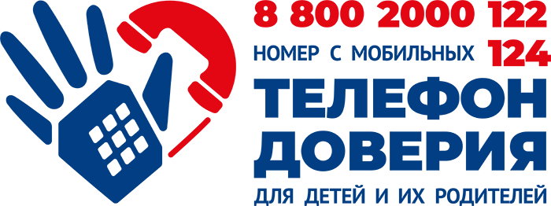

← Все материалы · Если прямо сейчас тяжело
Бесплатные линии поддержки: звонить можно анонимно, без записи и без диагноза. Нажмите на номер, и телефон откроет набор.

Бесплатно по всей России, анонимно. С мобильных телефонов можно звонить на короткий номер 124. Звонить может и ребёнок, и родитель.
Острый психоз: галлюцинации, бред, неадекватное поведение, угрожающее жизни собственной или окружающих.
При острых кризисных состояниях, панических атаках, после потрясений. Анонимно.
Бесплатно и анонимно, работают психологи с высшим профильным образованием. 051 — с городского телефона, +7 (495) 051 — с мобильного (по тарифу оператора). Также онлайн-консультации и приёмы в медучреждениях: запись и чат-бот на msph.mos.ru.
Психологическая помощь студенческой молодёжи.
Список основан на материалах психологической службы академии, подборке «Т—Ж: 15 способов получить помощь психолога бесплатно» и новости mos.ru о службе 051. Номера и режим работы могут меняться, уточняйте при звонке. Многие линии работают для Москвы: в других регионах спросите аналог службы. Эта страница не заменяет личную терапию.